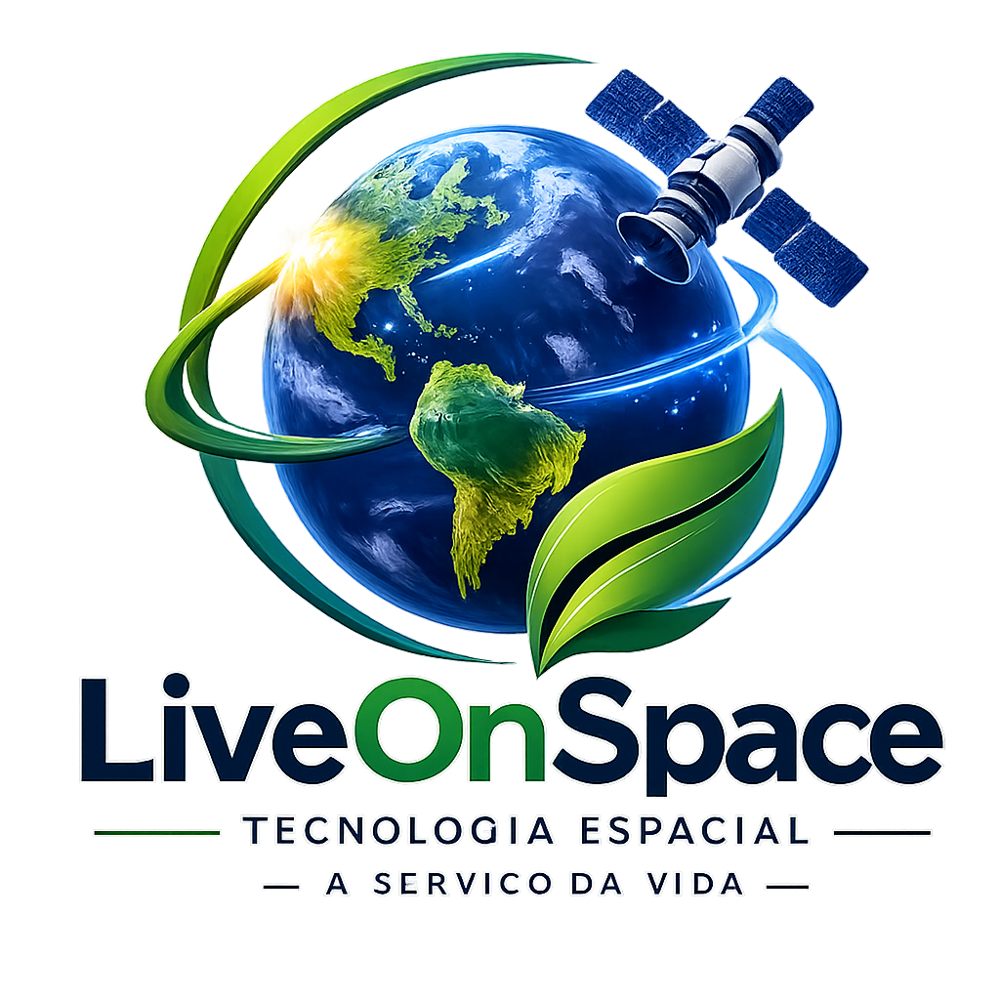
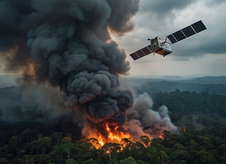
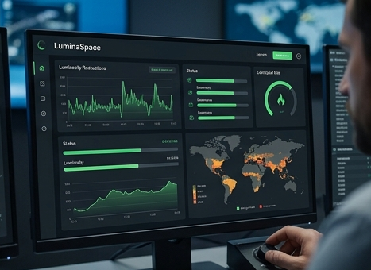
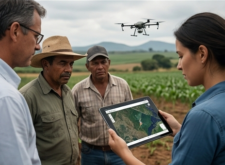
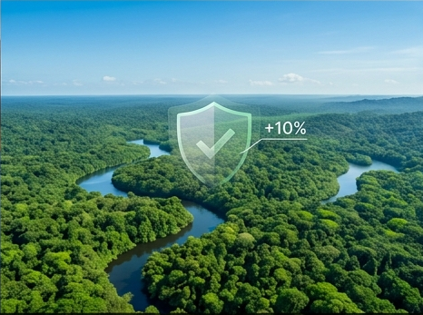

O Problema
Grandes queimadas e mudanças climáticas destroem ecossistemas terrestres rapidamente todos os anos.
A falta de dados integrados atrasa o combate a desastres ambientais críticos.

Grandes queimadas e mudanças climáticas destroem ecossistemas terrestres rapidamente todos os anos.
A falta de dados integrados atrasa o combate a desastres ambientais críticos.

Utilizamos microcontroladores Arduino conectados a sensores Climáticos e APIs de dados orbitais abertas.
A arquitetura integra hardware ágil a sistemas web usando HTML5, CSS3 e JavaScript.
Ver Simulação no Wokwi →Monitorar variações de clima ambiental em tempo real para prever riscos ecológicos terrestres severos.
Conectar dados de sensores locais a relatórios de satélites espaciais para ações rápidas.

Agências governamentais de proteção ambiental, cientistas climáticos e produtores agrícolas focados em sustentabilidade.
Comunidades vulneráveis expostas a riscos severos causados por desastres naturais constantes.

Identificação precoce de focos de incêndio florestal, reduzindo drasticamente os danos ambientais locais.
Otimização de recursos financeiros públicos através de monitoramento estratégico contínuo e automação preventiva.

Fiscais recebem alertas automáticos no celular assim que anomalias do clima são detectadas.
A plataforma web gera relatórios visuais dinâmicos para tomadas de decisão rápidas e eficientes.

Teste seus conhecimentos com 10 perguntas baseadas no LiveOnSpace.